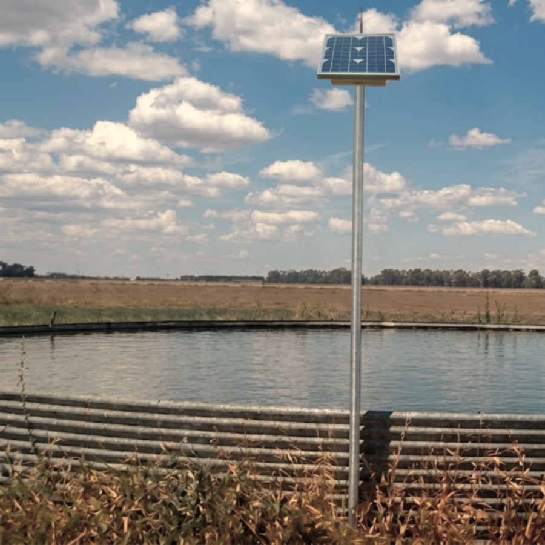
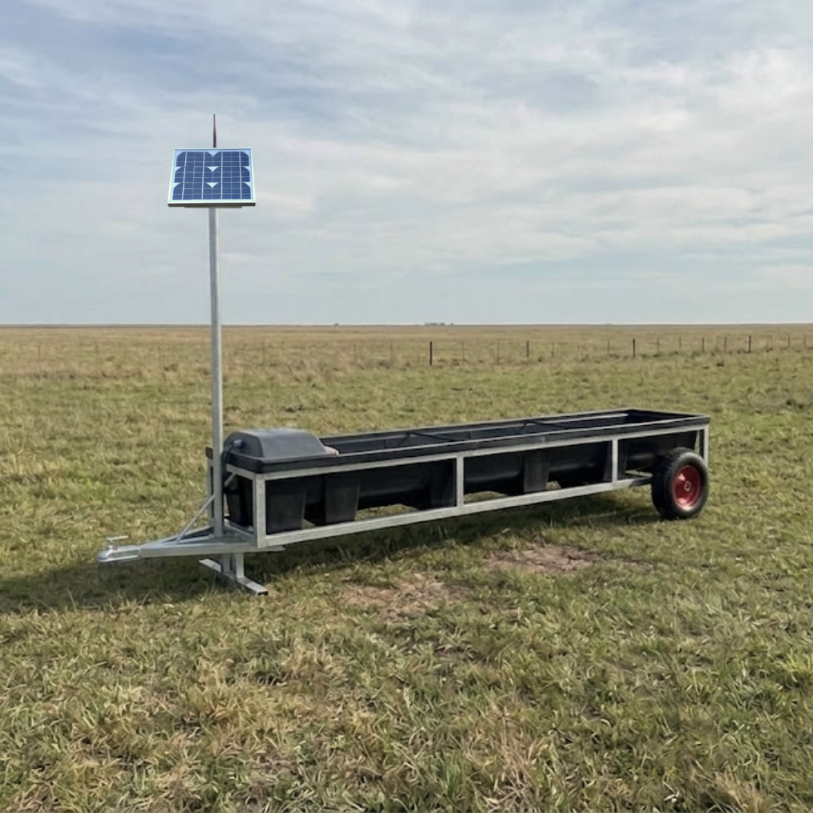

Nodo 03 de 04
Nodo Bomba
Para bombas eléctricas

Nodo 04 de 04
Nodo Molino
Para molinos de viento
Para exportar: Ctrl+P → Destino Guardar como PDF → Márgenes Ninguno → Escala 100% → tildar Gráficos de fondo. Para PNG exactos de 1080×1350 px: node export-png.mjs.
Un sistema modular que se instala sobre la infraestructura que ya tenés en el campo.

Ideal para conocer el estado de la reserva estratégica de agua de tu campo.

Pensado para acompañar la rotación de parcelas y prevenir estrés térmico.
Control total sobre el funcionamiento y rendimiento de la bomba de extracción.
Supervisá la actividad del molino y asegurá el funcionamiento.
Panel solar y batería integrada.
Inalámbrica de largo alcance (LoRa).
Con intervalo configurable.
Sobre lo que ya tenés instalado.
Recibe los datos de todos los nodos por LoRa y los sube a la nube por WiFi o 4G.
Escribinos y te ayudamos a dimensionar el sistema para tu campo. Sin compromiso.